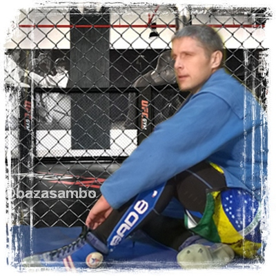
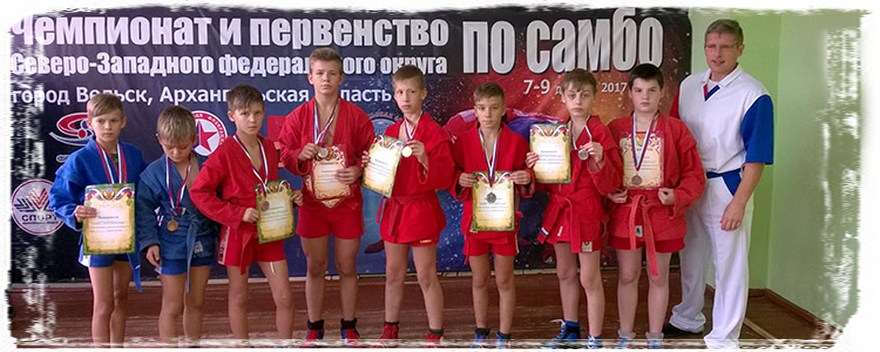
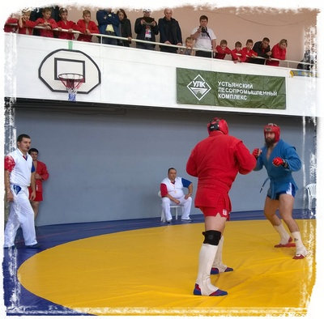
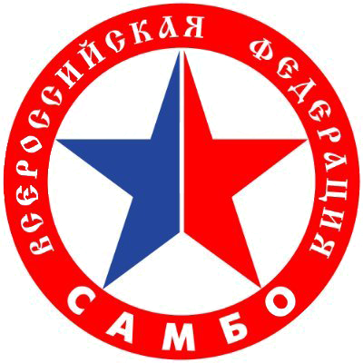
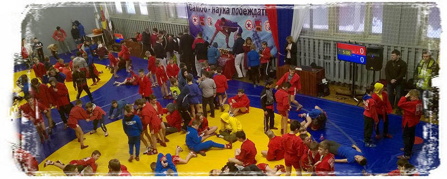

ТРЕНЕР
Тренер по самбо Антоновский Дмитрий рад Вас приветствовать на странице тренера по самбо (г. Вельск).
На сегодняшний день я считаюсь тренером-общественником, был в составе учредителей Федерации самбо г. Вельска. Имею red диплом по специальности «Тренер по самбо и дзюдо». В спорте единоборств с 1991 года (армейский рукопашный бой) , по себе знаю, что такое спортивный режим и подготовка к ответственным соревнованиям. Мастера спорта так и не успел заработать: однажды в лихие 90-ые вытаскивая друга из замеса, нас придавили машиной на полной скорости. С тех пор, пересиливая боль от травм, показал свои максимальные резульаты на нескольких областных турнирах и через 5 лет полностью перешел в тренерскую работу.
В моих планах – построить борцовский клуб в своем родном городе для тренировок по САМБО, где ребята могли бы бесплатно тренироваться, участвовать в межрегиональных днях борьбы, проходить подготовительные и межсезонные сборы, а летом - пребывать полный день.
Постоянно соврешенствую свою теорию и методику физической, технической, психологической подготовки единоборца; систематически изучаю современные научные труды в области физподготовки, и достаточно успешно применяю полученные знания в подготовке самбистов разного возраста. Благодаря этому мои спортсмены подходили к главным соревнованиям в своей лучшей форме и добивались призовых мест на городских, межрегиональных и областных турнирах. Как правило, преследуя только цель некоммерческого спортивного совершенствования, предпочитаю тренировать малочисленные группы, считая, что в этом случае смогу уделить максимальное время каждому спортсмену. Такая практика показала, что 3 борцов из 10 добивались призовых мест на зональных соревнованиях. Но вот замахиваться на всероссийский уровень – пока это работа не для нашей деревни, где я тренирую и тренируюсь сам. Но это все лишь вопрос времени.

За все время в клубе подготовлено 5 кандидатов в МС и около 100 разрядников в основном по самбо и армейскому рукопашному. Ребята предпризывного возраста, пройдя суровую мужскую школу, отшлифовав свою технику и характер об жесткость борцовского ковра, - при призыве в ряды Армии, отбирались в элитные войска: ВДВ, разведку и спецназ.
САМБО – это национальный вид спорта для воспитания в мальчиках мужского характера и стойкости. Самбо – это лучший способ физического развития тела через спортивное противоборство с равными и даже более сильными соперниками. При этом каждый оппонент – соперник на борцовском ковре, но в жизни – лучший друг и помощник.
Юноша через тренировки, порой до боли и насквозь промокшей самбовки, не без помощи опытного тренера, - познаёт слабые и сильные стороны своего характера, учится борцовской технике, приучает без сбоев работать свой организм в экстремальных ситуациях.
5 важных причин - почему мальчик должен заниматься борьбой самбо:
- рост авторитета и признания в своем окружении
- закаляет организм через положительный тренировочный стрес
- наращивает мышцы
- воспитываются координационные способности и быстрота принятия решений
- учится ответственности как подобает мужчине - за свои слова и поступки
5 важных изменений в жизни юноши, которые он может ожидать от регулярных занятий самбо:
- развитие мускулатуры мышц спины, шеи и рук
- исчезновение лишнего жира и рельефный пресс
- внимание и уважение в кругу друзей
- понимание, что хулиганы скорее тебе отдадут свой телефон, чем ты им
- выносливость выше, чем у обычного человека
5 важных ожиданий родителей юноши, когда тот будет посещать спортклуб самбо:
- нет залипания за компом и телефоном
- круг общения состоит из спортсменов и ребят, приученных к здоровому образу жизни
- повышенная ответственность за успеваемость в школе
- спортивные привычки, которые помогают справляться с работой по дому
- ваш ребёнок – Чемпион!
ТРЕНИРОВКИ
 САМБО – расшифровывается как САМооборона Без Оружия. Это национальный вид спортивного единоборства, берущий своё начало в 20 веке. Основоположниками развития самбо в СССР являлись Василий Сергеевич Ощепков (1892-1937) и Виктор Афанасьевич Спиридонов (1882-1944), продолжил их дело и вывел самбо на мировой уровень Анатолий Аркадьевич Харлампиев (1906-1979).Какие разделы в самбо существуют
Спортивное самбо (изучаются броски из стойки, болевые на руки и ноги)
Боевое самбо (к всему выше добавленному добавляются удары руками и ногами и удушающие приёмы) – по зрелищности и эффективности сравнится разве что ММА.
Когда мальчик приходит на мои тренировки впервые, он проходит начальное тестирование на силовые и скоростные способности, исходя из которых - строится тренировочный план на учебный год.
Для более опытных самбистов мною составляется план тренировок, исходя из даты главного турнира, когда важно быть на пике спортивной формы по скоростно-силовой подготовке, выносливости и технике борьбы.
Что делаем на тренировках:
- учимся правильно падать
- изучаем броски в стойке (вперед, назад, в стороны)
- отрабатываем атакующие приемы, если вдруг ты оказался даже лежащим на земле (в партере)
- тренируемся на отработку болевых приемов на руки, ноги, и защиту от них
- узнаем про удушающие приёмы

Одно занятие разбито на следующие части (тренировка у старших идет около 90 минут):
- разминка общая (бег, борцовская акробатика)
- разминка специальная (разминка в борцовском направлении с партнером, или на жгутатах, с медболами)
- набрасывание (отработка своего броска на силу, на скорость, в движении) или изучение новой техники в стойке и в партере
- специальная физическая подготовка (скоростная, скоростно-силовая, силовая подготовка борцовской направленности) для развития силы, выносливости и скорости бойца
- заминка (окончание тренировки)
Тренировочная неделя разбита на микроциклы (при 3-х занятиях в неделю ):
- Понедельник: скоростные качества и техника
- Среда: скоростно-силовые качества и совершенствование техники
- Пятница: силовая подготовка
- Суббота (днем): день борьбы (схватки по специальным заданиям)
Физподготовка самбиста разбита на мезоциклы (параллельно с технической подготовкой):
- около 30 дней – общеподготовительный (гипертрофия),
- более 60 дней – специально-подготовительный (специальная сила и мощность),
- до 30 дней – предсоревновательный (выход на пик спортивной формы по выносливости и скоростно-силовой подготовке) -около 7…10 дней соревновательный с последующим микроциклом на восстановление.
| 300 друзей и подписчиков. | 275 друзей и подписчиков. | |||
Все актуальные события и новости в жизни моего самбоклуба "База" (г. Вельск), так же - источник полезной информации об эффективных тренировках начинающих и опытных борцов-самбистов и о спортивной деятельности тренера. |
Новости от тренера и из спортивного зала, где шлифуют свой характер об борцовский ковер будущие чемпионы, и победа достается через тяжелый труд до наскозь промокшей самбисткой куртки от пота в семь ручьев. |
|||
| 120друзей и подписчиков. | 610 друзей и подписчиков. |
|||
Анонсы клубных мероприятий, и что же делает тренер в будние часы за пределами борцовского зала; вдохновляющие посты и фотографии о пользе САМБО и о победах нашего самбоклуба на соревновательном ковре. |
Мастер-классы по технике бросков и работе в партере, разборы соревновательных ситуаций и обзор тренировок по САМБО у детей и взрослых, обсуждение современной теории и методики подготовки самбистов. |
|||